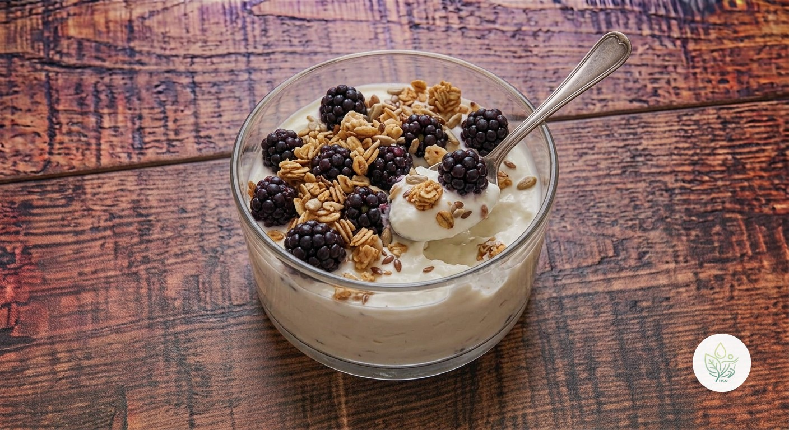

Bol de Skyr con Moras y Granola
BUn desayuno de 5 minutos con casi 32 g de proteína: skyr natural bien frío, moras frescas y un puñado de granola crujiente por encima.
El skyr aporta mucha proteína casi sin grasa y las moras, fibra y antocianinas con poco azúcar. Lo calificamos B por la granola: 30 g de una granola comercial suman unos 8 g de azúcar, y con el de la fruta y el skyr la ración llega a unos 23 g. Con granola casera o con avena tostada, sube a A.
Elaboración
- Pon el skyr en un bol.
- Añade las moras, lavadas y escurridas.
- Termina con la granola justo antes de comer, para que no se ablande.
Información nutricional (receta completa)
De las grasas, 1.4 g son saturadas · de los carbohidratos, 22.7 g son azúcares · sodio: 132 mg
Preguntas frecuentes
¿Cuántas calorías tiene la receta de Bol de Skyr con Moras y Granola?
Esta receta tiene 341.8 kcal en total (1 ración).
¿Puedo usar moras congeladas?
Sí; déjalas descongelar 10 minutos en el bol y soltarán un jugo que endulza el skyr de forma natural.
¿Qué granola elijo?
Mira la etiqueta: cuanto menos azúcar y más avena y frutos secos, mejor. Si puedes, hazla en casa.
¿Puedo sustituir el skyr?
El yogur griego natural funciona igual, con algo menos de proteína y más grasa.